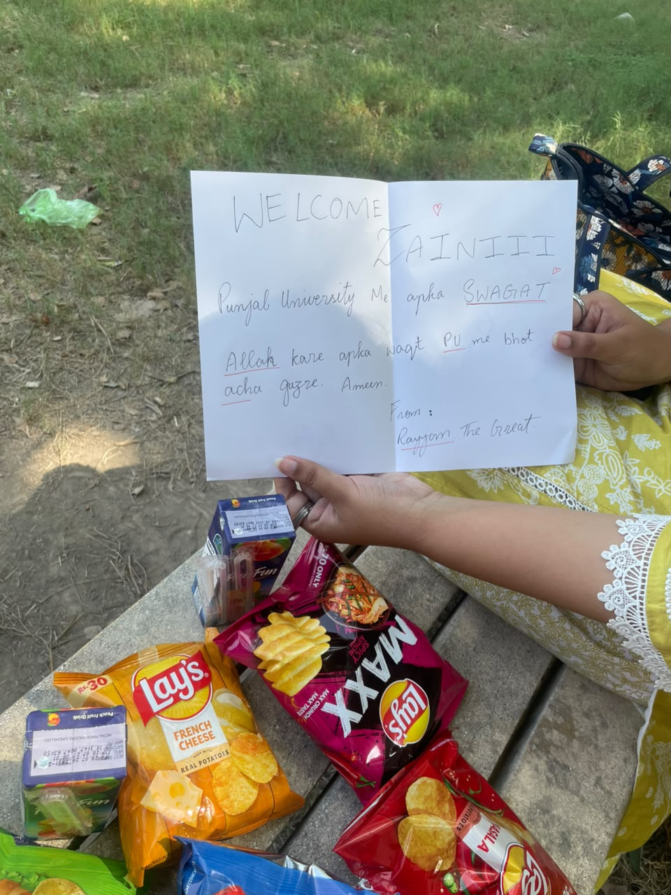

PHOTO 01 · CHAPTER 01The Day Everything Changed
FLIP TO READ ↗A LITTLE THOUGHT
The Day Everything Changed
This space is waiting for your own words. Add a favourite memory, a personal message, or a little detail that makes this moment yours.
TAP TO TURN BACK PHOTO 08 · CHAPTER 01
PHOTO 08 · CHAPTER 01